|

STAR TREK II:
THE WRATH OF KHAN
1982


Sinopse
comentada
Comentrios
Citaes
Efeitos
Especiais
Trilha Sonora
Trivia
Ficha
Tcnica
O
DVD
Imagem
"Jornada nas Estrelas II" apresentado em widescreen anamrfico na proporo aproximada de
2,35:1. Durante anos, em edies inferiores em VHS e LaserDisc, os fs
estiveram acostumados com uma imagem muito clara, granulada, com cores fracas e pouca definio. O motivo era porque o prprio filme
havia sido filmado dessa forma, sendo uma produo de oramento modesto, aparentando mais uma produo para TV do que para os cinemas. Para essa edio em DVD, a Paramount escureceu um pouco a imagem e aumentou a saturao das cores, dando uma aparncia mais de "filme" ao produto final.
O resultado ficou muito bom, com imagem bem definida, boas cores e alta resoluo. A granulao na imagem ainda bastante aparente, mas perfeitamente normal em filme de 20 anos de idade. Uma restaurao minuciosa poderia retirar toda a granulao, dando ao filme um visual mais limpo, mas os custos so elevadssimos e talvez a Paramount no quisesse gastar tanto com a produo desse DVD. O mesmo ocorreu com a edio especial do primeiro filme lanado anteriormente em DVD, em que a Paramount resolveu bancar novos efeitos especiais para o filme, mas optou
por no realizar uma restaurao para retirar a granulao da imagem. Parece que os custos de uma restaurao so superiores aos custos para a realizao de novos efeitos pelo computador.
Sendo esse DVD uma "Edio do Diretor", h vrias cenas inseridas no filme que os fs s tiveram a oportunidade de conferir na exibio na TV nos EUA em meados dos anos 80 e em cpias piratas de pssima qualidade. uma grata surpresa constatar que essas cenas esto em excelente qualidade no
DVD e que no h praticamente nenhuma diferena de qualidade entre elas e as imagens originais. Alm do mais, a primeira vez que
as tomadas so apresentadas em widescreen.
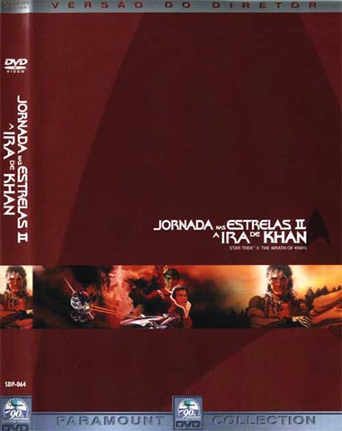
Som
Para essa edio em DVD a Paramount remixou o udio original para o formato Dolby Digital 5.1. O resultado um udio bem mais ativo e dinmico do que nas edies anteriores, mas ainda h problemas. Talvez por falta de tempo, ou de interesse, muitos dos dilogos do filme no foram redublados durante a fase de ps-produo. Em muitas cenas a qualidade dos dilogos muda consideravelmente, ficando abafado, com eco e rudos e logo em seguida claros e sem rudos. interessante notar que quase todas essas cenas envolvem William Shatner, podendo-se cogitar at mesmo que o ator no estivesse disponvel na ps-produo para redublar suas falas.
Dadas as limitaes dos elementos originais, no podemos esperar um udio agressivo e forte como nos filmes atuais de Jornada. O udio fica concentrado na maior parte do filme nos trs canais frontais. Os canais traseiros no so muito utilizados para criar efeitos sonoros tridimensionais e sim para criar ambientao. O subwoofer bem utilizado nas cenas em que a Enterprise passa pela tela e para realar os efeitos de exploses. O destaque fica por conta do combate final na Nebulosa Mutara, quando o udio ganha vida devido aos inmeros efeitos sonoros dessa cena. Os barulhos de raios e troves direcionados aos canais apropriados e com reforo do subwoofer criam um campo sonoro bem interessante e colaboram com o suspense do clmax do filme.
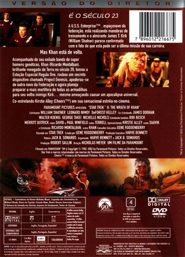
Extras
A Edio do Diretor de "Jornada nas Estrelas II: A Ira de Khan" tem uma boa quantidade de extras e oferece uma boa viso do que foi a produo do filme e sua histria dentro do contexto da franquia. Com menus esteticamente agradveis, ao mesmo tempo simples e dinmicos, o material indispensvel a qualquer colecionador. Especialmente interessantes so as trilhas de comentrios (em udio com Nicholas Meyer e em legendas com Michael Okuda), presentes no disco 1.
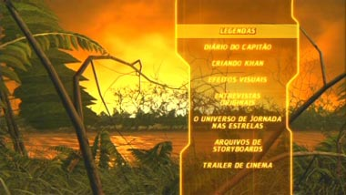
Entretanto, difcil acreditar que essa edio
dupla realmente precisa de dois discos para acomodar todo o material.
Outra deficincia que predominam nos documentrios da edio formatos tradicionais e at mesmo pouco trabalhados de narrativa, o que no ajudam a converter o disco de extras na "referncia definitiva" sobre
"A Ira de Khan". Confira o material disponvel:
Dirio do Capito (27 minutos)
O primeiro dos extras uma narrao bsica da concepo e da produo de
"Jornada nas Estrelas II: A Ira de Khan". O segmento conta com entrevistas inditas e feitas recentemente com os grandes protagonistas da produo: os atores William Shatner, Leonard Nimoy e Ricardo Montalban, o produtor Harve Bennett e o diretor Nicholas Meyer.
O segmento no acrescenta muito ao que j se sabia a respeito do filme, mas valioso por representar de forma exata as personalidades desses grandes personagens de Hollywood. Shatner se mostra bem-humorado, extremamente irnico e egocntrico (sugerindo at que a cena do encontro de Spock e Kirk, pouco antes da morte do Vulcano, separados por um vidro, fosse obra dele). Nimoy, centrado e consciente, conta como criou a sada para a volta de Spock. Bennett mostra como recriou a franquia aps o fracasso criativo de
"O Filme", com muita ajuda do dinmico e absurdamente competente Nicholas Meyer. Montalban acrescenta seu bom humor e sua simpatia, que contrastam incrivelmente com a vilania de Khan.
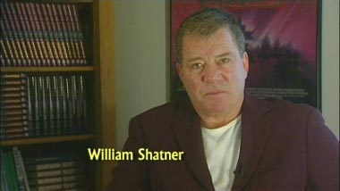
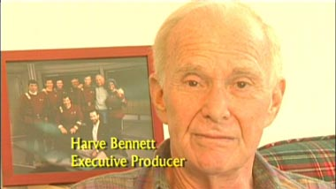
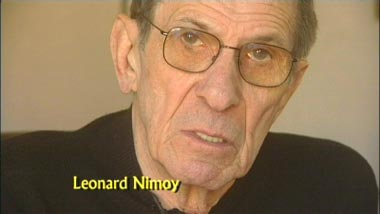
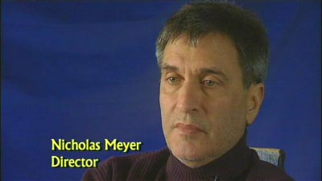
Projetando Khan (24 minutos)
Provavelmente um dos mais informativos making-ofs do disco, "Projetando Khan" oferece entrevistas com Nicholas Meyer, o designer da produo Joseph Jennings e o figurinista Robert Fletcher, entre outros. Temos belos insights sobre as inspiraes navais de Meyer, sua transposio para os novos uniformes da Frota Estelar com Fletcher e a adaptao dos conceitos de ao pedidos por Meyer s restries impostas pelo formato original de "Jornada nas Estrelas".
Acaba sendo um material mais "novo", do ponto de vista de informao, que o "Dirio do Capito", embora o primeiro documentrio inclua mais "celebridades" da produo e realizao do filme. a verso "mo-na-massa" do "Dirio do Capito".
Efeitos Visuais (18 minutos)
A equipe de tcnicos da Industrial Light and Magic tem a palavra, para explicar como foram feitos os efeitos visuais de "A Ira de Khan". Mais uma vez, a informao parece mais saborosa, principalmente quando nos dado a conhecer o quo criativos esses profissionais precisavam ser para criar os efeitos.
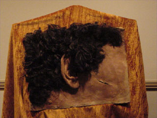
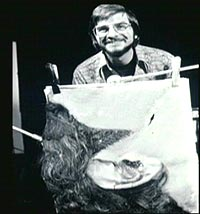
Do ponto de vista de completude, esse parece ser o "melhor" dos documentrios. Ele esgota o assunto a que se refere, deixando pouco espao para adies (o pouco que sobra preenchido pelos comentrios de Michael Okuda).
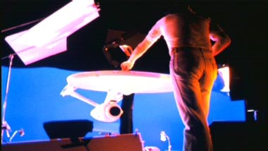
Entrevistas originais de 1982 (11 minutos)
Vale apenas pela afeio, por ver o que disseram Shatner, Nimoy, o saudoso DeForest Kelley e Ricardo Montalban poca do lanamento do filme. divertido ver o canastro Shatner aparentemente jogando todo o seu charme para cima da pobre reprter.
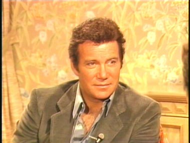
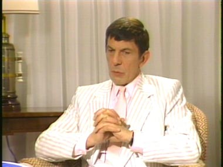
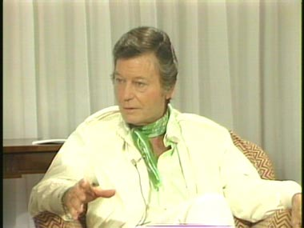
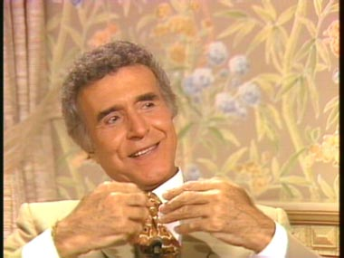
O Universo de Jornada nas Estrelas (29 minutos)
Um documentrio de 29 minutos com somente duas entrevistas simplesmente no se sustenta. Os autores Greg Cox (da srie de livros "The Eugenics Wars") e Julie Ecklar ("Kobayashi Maru") so entrevistados interessantes, e o tema tambm bastante relevante -- a importncia dos livros na saga de Jornada nas Estrelas. Mas faltou aqui mais substncia, ou, inversamente, sobrou tempo. Em resumo: o documentrio mais "criativo" tambm o mais decepcionante.
Storyboards
Conjunto de 13 cenas, tais quais foram concebidas pela produo antes das filmagens. um material interessante para colecionador, mas carece de um tratamento maior no quesito "apresentao", para que possa ter algum valor para o telespectador casual.
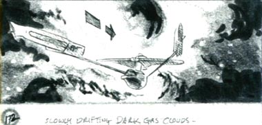
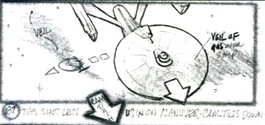
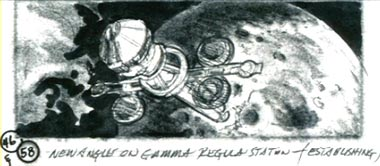
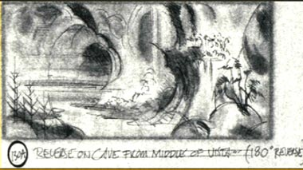
Trailer de cinema
O que todo mundo viu em 1982.
Ficha Tcnica
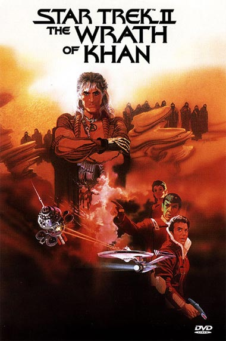
Extras: Menu interativo, Seleo de Cena, comentrios do diretor, texto de Michael Okuda, 4 documentrios, entrevistas originais, trailer e storyboards
Vdeo: Widescreen anamrfico (2,35:1)
udio: Ingls (Dolby Digital 5.1 Surround), Ingls (Dolby 2.0 Surround)
Legendas: Ingls, Portugus, Espanhol
Ano de produo: 1982
Durao: 116 minutos
Ano de Lanamento no Brasil (Regio 4): 2002